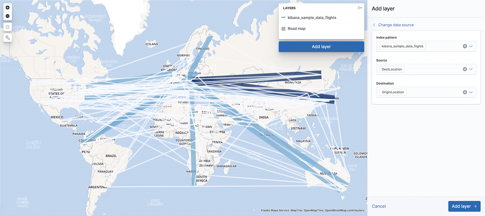

Point to point
editA point-to-point connection plots aggregated data paths between the source and the destination. Thicker, darker lines symbolize more connections between a source and destination, and thinner, lighter lines symbolize less connections.
Point to point uses an Elasticsearch terms aggregation to group your documents by destination. Then, a nested GeoTile grid aggregation groups sources for each destination into grids. A line connects each source grid centroid to each destination.
Point-to-point layers are used in several common use cases:
- Source-destination maps for network traffic
- Origin-destination maps for flight data
- Origin-destination flows for import/export/migration
- Origin-destination for pick-up/drop-off data
